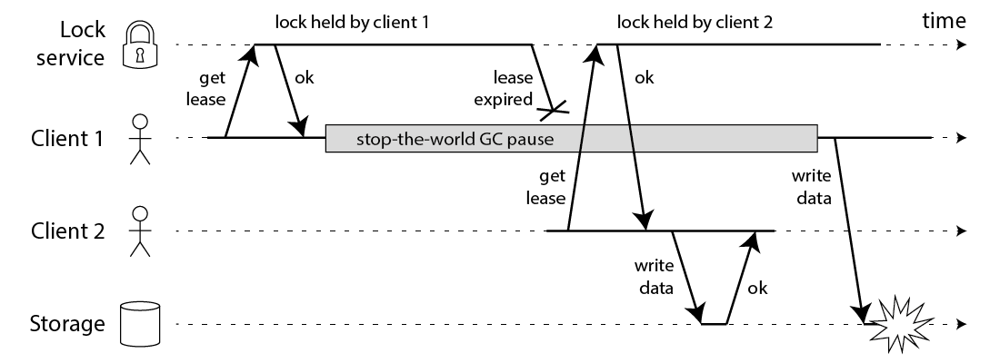

2019 06 23 如何实现分布式锁
作为本书的一部分，我在Redis发现了一种名为Redlock的算法，该算法声称在Redis上实现容错分布式锁（或者更确切地说，租用[1]），并且页面要求来自分布式系统地人的反馈。这个算法本能在我的脑海里引发了一些警钟，所以我花了些时间思考它，并写下这些笔记。
由于已经有超过10个独立的Redlock实现，我们不知道谁已经依赖这个算法，我认为值得公开分享我的笔记。我不会涉及Redis的其他方面，其中一些已经在其他地方被评论过。
在我详细介绍Redlock之前，请允许我说我非常喜欢Redis，过去我已成功将它用于生产中。我认为它非常适合您希望在服务器之间共享一些瞬态，近似，快速变化的数据的情况，以及如果您因某种原因偶尔丢失数据并不是什么大不了的地方。例如，一个好的用例是维护每个IP地址的请求计数器（用于速率限制）和每个用户ID的不同IP地址集（用于滥用检测）。
然而，Redis已经逐渐进入数据管理领域，这些领域具有更强的一致性和耐用性预期 - 这让我担心，因为这不是Redis的设计目标。 可以说，分布式锁定是其中一个领域。 让我们更详细地研究它。可以说，分布式锁定是其中一个领域。 让我们更详细地研究它。
你将锁定用于何处
锁定的目的是确保在可能尝试执行相同工作的多个节点中，只有一个实际执行它（至少一次只执行一次）。这项工作可能是将一些数据写入共享存储系统，执行某些计算，调用某些外部API等。 在较高的层次上，有两个原因可能导致您在分布式应用程序中需要锁定：效率或正确性。为了区分这些情况，您可以询问如果锁定失败会发生什么：
-
效率：锁定可以避免不必要地执行相同的工作两次（例如，一些昂贵的计算）。 如果锁定失败并且两个节点最终完成相同的工作，结果是成本略有增加（最终为AWS支付的费用比您原本要多5美分）或稍有不便（例如用户最终） 两次收到相同的电子邮件通知）。
-
正确性：采取锁定可防止并发进程踩到彼此的脚趾并弄乱系统状态。 如果锁定失败并且两个节点同时处理同一条数据，则结果是文件损坏，数据丢失，永久性不一致，给予患者的药物剂量错误或其他一些严重问题。
两者都是想要锁定的有效案例，但是你需要非常清楚你要处理的两个中的哪一个。
我将争辩说，如果您仅仅为了提高效率而使用锁，则不必承担Redlock的成本和复杂性，运行5台Redis服务器并检查大多数锁以获取锁。 您最好只使用一个Redis实例，可能在主要崩溃的情况下使用异步复制到辅助实例。
如果您使用单个Redis实例，当然如果Redis节点上的电源突然断电或者出现其他问题，您将丢弃一些锁。 但是如果你只是使用锁作为效率优化，并且崩溃不会经常发生，那没什么大不了的。 这个“没什么大不了的”情景是Redis闪耀的地方。 至少如果您依赖于单个Redis实例，那么每个看系统的人都很清楚锁是近似的，并且仅用于非关键目的。
另一方面，具有5个副本和多数表决权的Redlock算法乍一看，好像它适用于锁定对正确性很重要的情况。 我将在以下各节中论证它不适合这个目的。 对于本文的其余部分，我们将假设您的锁对于正确性很重要，并且如果两个不同的节点同时认为它们持有相同的锁，那么这是一个严重的错误。
使用锁保护资源
让我们暂时搁置Redlock的细节，并讨论如何使用分布式锁（与所使用的特定锁定算法无关）。 重要的是要记住，分布式系统中的锁不像多线程应用程序中的互斥锁。 这是一个更复杂的野兽，因为不同的节点和网络都可以以各种方式独立地失败。
例如，假设您有一个应用程序，其中客户端需要更新共享存储中的文件（例如HDFS或S3）。 客户端首先获取锁，然后读取文件，进行一些更改，将修改后的文件写回，最后释放锁。 该锁防止两个客户端同时执行此读 - 修改 - 写周期，这将导致更新丢失。 代码可能如下所示：
// THIS CODE IS BROKEN
function writeData(filename, data) {
var lock = lockService.acquireLock(filename);
if (!lock) {
throw 'Failed to acquire lock';
}
try {
var file = storage.readFile(filename);
var updated = updateContents(file, data);
storage.writeFile(filename, updated);
} finally {
lock.release();
}
}
不幸的是，即使您拥有完美的锁定服务，上面的代码也会被破坏。 下图显示了如何最终处理损坏的数据：

在此示例中，获取锁的客户端在持有锁的同时暂停一段时间 - 例如，因为垃圾收集器（GC）启动。锁具有超时（即它是租约），这是 总是一个好主意（否则一个崩溃的客户端可能会永远持有一个锁，永远不会释放它）。 但是，如果GC暂停持续时间超过租约到期时间，并且客户端没有意识到它已经过期，则可能会继续进行并进行一些不安全的更改。
这个错误不是理论上的：HBase曾经有过这个问题[3,4]。 通常情况下，GC暂停非常短暂，但“停止世界”的GC暂停有时会持续几分钟[5] - 肯定足够长的时间让租约到期。 即使是所谓的“并发”垃圾收集器，如HotSpot JVM的CMS也无法与应用程序代码并行运行 - 即使他们需要不时地停止这个世界[6]。
在写回存储之前，通过在锁定到期时插入检查来解决此问题。 请记住，GC可以在任何时候暂停正在运行的线程，包括对您来说最不方便的点（在最后一次检查和写入操作之间）。
如果您感到自鸣得意，因为您的编程语言运行时没有长时间的GC暂停，那么您的进程可能会暂停的原因还有很多。 也许您的进程尝试读取尚未加载到内存中的地址，因此它会出现页面错误并暂停，直到从磁盘加载页面为止。 也许您的磁盘实际上是EBS，因此无意中读取变量会变成亚马逊拥塞网络上的同步网络请求。 也许有许多其他进程争用CPU，并且您在调度程序树中遇到了一个黑色节点。 也许有人不小心将SIGSTOP发送给了这个过程。 随你。 您的流程将暂停。
如果您仍然不相信过程暂停，请考虑在到达存储服务之前，文件写入请求可能会在网络中延迟。 诸如以太网和IP之类的分组网络可能会任意延迟数据包，并且它们会[7]：在GitHub的一个着名事故中，数据包在网络中延迟了大约90秒[8]。 这意味着应用程序进程可以发送写入请求，并且可以在租约已经过期的一分钟后到达存储服务器。
即使在管理良好的网络中，也会发生这种情况。 您根本无法对时序做出任何假设，这就是为什么上面的代码根本不安全，无论您使用什么锁服务。
使用围栏使锁安全
解决此问题的方法实际上非常简单：您需要在存储服务的每个写入请求中包含一个防护标记。 在此上下文中，防护令牌只是每次客户端获取锁定时增加（例如，由锁定服务递增）的数字。 如下图所示：

客户端1获取租约并获得33的令牌，但随后它会进入长时间停顿并且租约到期。 客户端2获取租约，获得34的令牌（数量总是增加），然后将其写入发送到存储服务，包括令牌34.稍后，客户端1恢复生命并将其写入发送到存储服务 但是，存储服务器会记住它已经处理了具有更高令牌号的写入（34），因此它拒绝带有令牌33的请求。
请注意，这要求存储服务器在检查令牌时起主动作用，并拒绝令牌反向的任何写入。 但是，一旦你知道了这个诀窍，这并不是特别难。 并且只要锁定服务生成严格单调增加的令牌，这就使锁定安全。 例如，如果您使用ZooKeeper作为锁定服务，则可以使用zxid或znode版本号作为防护令牌，并且您处于良好状态[3]。
然而，这导致我们遇到Redlock的第一个大问题：它没有任何生成防护令牌的工具。 每次客户端获取锁定时，该算法不会产生任何保证增加的数字。 这意味着即使算法完美无缺，也不会安全使用，因为在一个客户端暂停或其数据包被延迟的情况下，您无法阻止客户端之间的竞争条件。
对我来说，如何更改Redlock算法以开始生成fencing令牌并不明显。 它使用的唯一随机值不能提供所需的单调性。 简单地将计数器保留在一个Redis节点上是不够的，因为该节点可能会失败。 将计数器保留在几个节点上意味着它们会不同步。 您可能需要一个一致的算法来生成防护令牌。 （如果只是增加一个计数器很简单。）
利用时间解决共识
Redlock无法生成防护令牌这一事实应该已经足以成为在正确性取决于锁定的情况下不使用它的理由。 但还有一些值得讨论的问题。
在学术文献中，这种算法最实用的系统模型是具有不可靠故障检测器的异步模型[9]。 简单来说，这意味着算法不会对时序做出任何假设：进程可能暂停任意长度的时间，数据包可能在网络中被任意延迟，时钟可能是任意错误的 - 然而算法仍然可以正确执行 事情。 鉴于我们上面讨论的内容，这些都是非常合理的假设。
算法可以使用时钟的唯一目的是生成超时，以避免在节点关闭时永远等待。 但是超时不必是准确的：仅仅因为请求超时，这并不意味着另一个节点肯定是关闭的 - 它也可能是因为网络中存在大的延迟，或者您的本地时钟 是错的。 当用作故障检测器时，超时只是猜测出现了问题。 （如果可以的话，分布式算法将完全没有时钟，但随后协商变得不可能[10]。获取锁定就像是比较和设置操作，这需要共识[11]。）
请注意，Redis使用gettimeofday而不是单调时钟来确定密钥的到期时间。 gettimeofday的手册页明确表示它返回的时间会受制于系统时间的不连续跳跃 - 也就是说，它可能会突然向前跳几分钟，甚至可能会跳回时间（例如，如果时钟由NTP步进，因为 它与NTP服务器的区别太大，或者如果时钟由管理员手动调整）。 因此，如果系统时钟做了奇怪的事情，很容易发生Redis中的密钥到期比预期快得多或慢得多。
对于异步模型中的算法，这不是一个大问题：这些算法通常确保其安全属性始终保持不变，而不做任何时序假设[12]。 只有活动属性取决于超时或其他一些故障检测器。 简单来说，这意味着即使系统中的时间到处都是（进程暂停，网络延迟，时钟向前和向后跳跃），算法的性能可能会下降，但算法永远不会成为 错误的决定。
但是，Redlock不是这样的。 它的安全性取决于许多时序假设：它假设所有Redis节点在到期之前保持密钥大约合适的时间长度; 与到期时间相比，网络延迟较小; 并且该过程暂停比到期持续时间短得多。
用糟糕的时间打破Redlock
让我们看一些例子来证明Redlock对时序假设的依赖。 假设系统有五个Redis节点（A，B，C，D和E）和两个客户端（1和2）。 如果其中一个Redis节点上的时钟跳转，会发生什么？
- 客户端1获取节点A，B，C上的锁定。由于网络问题，无法访问D和E.
- 节点C上的时钟向前跳跃，导致锁定到期。
- 客户端2获取节点C，D，E上的锁定。由于网络问题，无法访问A和B.
- 客户1和2现在都认为他们持有锁。
如果C在将锁持久保存到磁盘之前崩溃并且立即重新启动，则可能发生类似的问题。 出于这个原因，Redlock文档建议至少延迟崩溃节点的重启，以获得最长寿命锁的生存时间。 但是这种重启延迟再次依赖于合理准确的时间测量，并且如果时钟跳跃则会失败。
好吧，也许你认为时钟跳转是不现实的，因为你非常有信心正确配置NTP只能转换时钟。 在这种情况下，让我们看一个进程暂停如何导致算法失败的示例：
- 客户端1请求锁定节点A，B，C，D，E。
- 虽然对客户端1的响应正在进行中，但客户端1进入了
STW的GC。 - 锁定在所有Redis节点上过期。
- 客户端2获取节点A，B，C，D，E上的锁。
- 客户端1完成GC，并从Redis节点接收响应，指示它已成功获取锁（它们在进程暂停时保存在客户端1的内核网络缓冲区中）。
- 客户1和2现在都认为他们持有锁。
请注意，即使Redis是用C语言编写的，因此没有GC，但这对我们没有帮助：客户端可能遇到GC暂停的任何系统都存在此问题。 您只能在客户端2获取锁定后阻止客户端1在锁定下执行任何操作，例如使用上面的防护方法，从而使此安全。
长网络延迟可以产生与进程暂停相同的效果。 它可能取决于您的TCP用户超时 - 如果您使超时显着短于Redis TTL，可能会忽略延迟的网络数据包，但我们必须详细查看TCP实现以确保。 此外，随着超时，我们又回到了时间测量的准确性！
Redlock的同步假设
这些示例显示只有在您采用同步系统模型时Redlock才能正常工作 - 即具有以下属性的系统：
- 有限的网络延迟（您可以保证数据包总是在一些保证的最大延迟内到达），
- 有限的过程暂停（换句话说，硬实时约束，通常只能在汽车安全气囊系统中找到），以及
- 有限的时钟错误（交叉你的手指你没有从坏的NTP服务器得到你的时间）。
请注意，同步模型并不意味着完全同步的时钟：它意味着您假设已知的，固定的网络延迟上限，暂停和时钟漂移[12]。 Redlock假设延迟，暂停和漂移相对于锁的生存时间都很小; 如果时间问题变得与生存时间一样大，则算法失败。
在性能相当良好的数据中心环境中，时序假设将在大多数时间内得到满足 - 这被称为部分同步系统[12]。 但这还够好吗？ 一旦这些时间假设被打破，Redlock可能会违反其安全属性，例如， 在另一个客户到期之前向一个客户授予租约。 如果你依赖于锁定的正确性，“大部分时间”是不够的 - 你需要它始终是正确的。
有大量证据表明，对于大多数实际系统环境，假设同步系统模型是不安全的[7,8]。 使用90秒的数据包延迟提醒自己GitHub事件。 Redlock不太可能在Jepsen测试中存活下来。
另一方面，为部分同步系统模型（或具有故障检测器的异步模型）设计的一致性算法实际上有机会工作。 Raft，Viewstamped Replication，Zab和Paxos都属于这一类。 这样的算法必须放弃所有时序假设。 这很难：假设网络，流程和时钟比实际更可靠，这是很诱人的。 但是在分布式系统的混乱现实中，你必须非常小心你的假设。
总结
我认为Redlock算法是一个糟糕的选择，因为它“既不是鱼也不是鸡”：它对于效率优化锁是不必要的重量级和昂贵的，但是对于正确性取决于锁的情况它并不足够安全。
特别是，该算法对时序和系统时钟做出了危险的假设（基本上假设一个同步系统具有有界网络延迟和有限的操作执行时间），如果不满足这些假设，它就违反了安全属性。 此外，它缺乏用于生成防护令牌的设施（其保护系统免受网络中的长时间延迟或暂停的过程）。
如果您只需要尽力而为（仅作为效率优化，而不是正确性），我建议坚持使用Redis的简单单节点锁定算法（条件集 - 如果不存在则获得锁定， atomic delete-if-value-matches以释放锁定，并在您的代码中非常清楚地记录锁只是近似的，有时可能会失败。 不要费心设置五个Redis节点的集群。
另一方面，如果您需要锁定正确，请不要使用Redlock。 相反，请使用适当的共识系统，如ZooKeeper，可能通过实施锁定的Curator配方之一。 （至少，使用具有合理事务保证的数据库。）并且请在锁定下的所有资源访问上强制使用fencing令牌。
正如我在开始时所说的，如果你正确使用它，Redis是一个很好的工具。 以上都没有减少Redis用于其预期目的的有用性。 Salvatore多年来一直致力于该项目，其成功当之无愧。 但是每种工具都有局限性，了解它们并进行相应的规划非常重要。
如果您想了解更多信息，我会在本书的第8章和第9章中更详细地解释这个主题，现在可以在O'Reilly的早期版本中找到。 （上图来自我的书。）为了学习如何使用ZooKeeper，我推荐Junqueira和Reed的书[3]。 为了更好地介绍分布式系统理论，我推荐了Cachin，Guerraoui和Rodrigues的教科书[13]。
感谢Kyle Kingsbury，Camille Fournier，Flavio Junqueira和Salvatore Sanfilippo审阅本文的草稿。 当然，任何错误都是我的。
2016年2月9日更新：Redlock的原作者Salvatore发表了对本文的反驳（另见HN讨论）。 他提出了一些好的观点，但我坚持我的结论。 如果我有时间，我可以在后续帖子中详细说明，但请形成您自己的意见 - 请参考下面的参考资料，其中许多已获得严格的学术同行评审（与我们的任何博客文章不同）。
参考
-
Cary G Gray and David R Cheriton: “Leases: An Efficient Fault-Tolerant Mechanism for Distributed File Cache Consistency,” at 12th ACM Symposium on Operating Systems Principles (SOSP), December 1989. doi:10.1145/74850.74870
-
Mike Burrows: “The Chubby lock service for loosely-coupled distributed systems,” at 7th USENIX Symposium on Operating System Design and Implementation (OSDI), November 2006.
-
Flavio P Junqueira and Benjamin Reed: ZooKeeper: Distributed Process Coordination. O’Reilly Media, November 2013. ISBN: 978-1-4493-6130-3
-
Enis Söztutar: “HBase and HDFS: Understanding filesystem usage in HBase,” at HBaseCon, June 2013.
-
Todd Lipcon: “Avoiding Full GCs in Apache HBase with MemStore-Local Allocation Buffers: Part 1,” blog.cloudera.com, 24 February 2011.
-
Martin Thompson: “Java Garbage Collection Distilled,” mechanical-sympathy.blogspot.co.uk, 16 July 2013.
-
Peter Bailis and Kyle Kingsbury: “The Network is Reliable,” ACM Queue, volume 12, number 7, July 2014. doi:10.1145/2639988.2639988
-
Mark Imbriaco: “Downtime last Saturday,” github.com, 26 December 2012.
-
Tushar Deepak Chandra and Sam Toueg: “Unreliable Failure Detectors for Reliable Distributed Systems,” Journal of the ACM, volume 43, number 2, pages 225–267, March 1996. doi:10.1145/226643.226647
-
Michael J Fischer, Nancy Lynch, and Michael S Paterson: “Impossibility of Distributed Consensus with One Faulty Process,” Journal of the ACM, volume 32, number 2, pages 374–382, April 1985. doi:10.1145/3149.214121
-
Maurice P Herlihy: “Wait-Free Synchronization,” ACM Transactions on Programming Languages and Systems, volume 13, number 1, pages 124–149, January 1991. doi:10.1145/114005.102808
-
Cynthia Dwork, Nancy Lynch, and Larry Stockmeyer: “Consensus in the Presence of Partial Synchrony,” Journal of the ACM, volume 35, number 2, pages 288–323, April 1988. doi:10.1145/42282.42283
-
Christian Cachin, Rachid Guerraoui, and Luís Rodrigues: Introduction to Reliable and Secure Distributed Programming, Second Edition. Springer, February 2011. ISBN: 978-3-642-15259-7, doi:10.1007/978-3-642-15260-3
加入关于Hacker News的这篇文章的讨论。